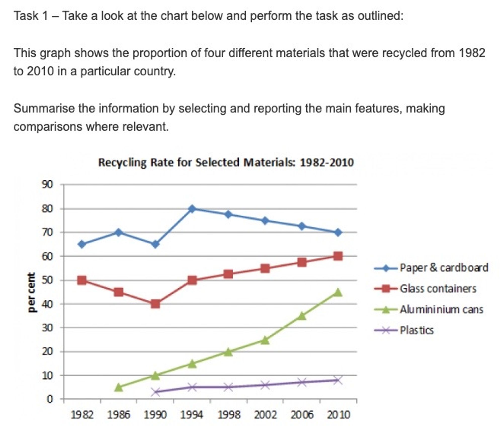

So, now that we have an introduction, lets write the body of the essay.
Tip of the Day Write you Essay
I mean, what else was I going to do.Alright then, let's put pen to paper. Use proper grammar, vocabulary, and sentence structure. If you're feeling fancy, throw in some linking words and phrases to make your essay look like it was written by a pro.
Writing the Key Features
The next step is to write the body, i.e., about the key features. It is advisable to split the key features into two main bodies:
Main Body 1: Present the key features with supporting figures.
Main Body 2: Make comparisons if relevant or highlight more key features.
What to include in main body 1 and 2?
Okay, so how do we put the proceeding to use?
Regarding this task the key features would be:
1. (Identifying the subjects/categories) The names and quantity of the different materials. - Paper & cardboard, glass containers, aluminium cans and plastics
2. (Global maximums and minimums) Which is the most recycled material, and the least recycled material? - Paper and cardboard are the most recycled materials, plastics are recycled the least.
3. (Looking for the notable trends) Which materials had notable fluctuations? - Aluminium cans had the most notable increase and plastics had the steadiest trend. Paper & cardboard had a high peak then a drop off.
Main Body 1:
In 1982, paper, cardboard and glass containers were the only 2 materials that registered any recycling with rates of about 65 and 50 percent respectively, whereas the recycling of aluminium cans and plastics started at a low rate of less than 5% from the respective years of 1986 and 1990.
Main Body 2:
Over the three decades, paper and cardboard remained the most recycled materials with a significant peak of 80% in 1994 before a 10% decrease by 2010, followed by glass containers that saw some fluctuation but eventually reached 60% in the final year evaluated. In contrast, aluminium cans had a substantial and steady uptake in recycling, ultimately reaching a percentage of about 45% in 2010. Finally, plastics had the poorest growth in recycling, reaching a proportion of less than 10% by the end of the twenty-eight years.
We have an introduction and two main body points. Let's put our essay together.
The line graph displays the recycling trends of a select few materials over the span of almost 3 decades from 1982 to 2010 in a specific region. Overall, paper, cardboard and glass containers were the most recycled materials, whereas the rate of aluminium recycling had the most significant increase, while plastics saw little to no increase in recycling over the given period.
In 1982, paper, cardboard and glass containers were the only 2 materials that registered any recycling with rates of about 65% and 50% respectively, whereas the recycling of aluminium cans and plastics started at a low rate of less than 5% from the respective years of 1986 and 1990.
Over the three decades, paper and cardboard remained the most recycled materials with a significant peak of 80% in 1994 before a 10% decrease by 2010, followed by glass containers that saw some fluctuation but eventually reached 60% in the final year evaluated. In contrast, aluminium cans had a substantial and steady uptake in recycling, ultimately reaching a percentage of about 45% in 2010. Finally, plastics had the poorest growth in recycling, reaching a proportion of less than 10% by the end of the twenty-eight years.
Remember
Writing is the anchor of our thoughts, the vessel of our imagination, and the conduit through which we share the legacy of our minds with the world.